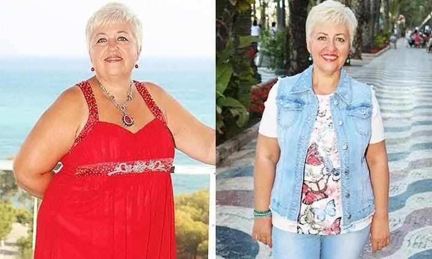
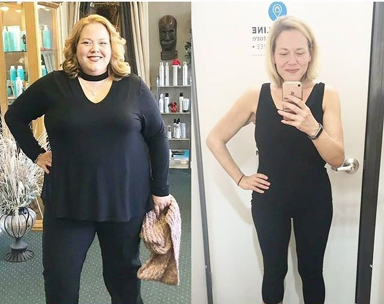
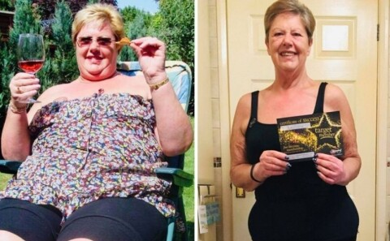
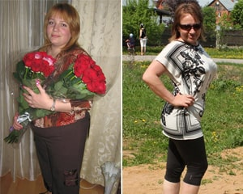

После 50 жизнь только начинается!
О себе: Меня зовут Анастасия, мне 52 года. Я развелась в 49 лет после 20 лет брака и начала новую жизнь в новом теле, завела новые хобби и отношения. В своем блоге я делюсь полезными советами для женщин за 50.
Легко сбросила 100 килограммов и начала новую жизнь. Моя методика похудения после 50 лет
Всем привет!
Сегодня я хочу рассказать о своем похудении, так как огромное количество читательниц спрашивали меня о том, как мне удалось похудеть в этом возрасте. И так как я уже порядком подустала отвечать на каждый подобный вопрос, решила собрать всю информацию в одной статье и, в целом, подробно рассказать всю свою историю.
У меня всю жизнь был нестабильный вес. В том плане, что я постоянно то худела, то набирала – и так по вечному кругу.
Худеть я пыталась разными способами. Пробовала моно-диеты – это когда ешь какой-то определенный диетический продукт на обед, завтрак и ужин каждый день. И это, пожалуй, самый глупый способ похудения, который в принципе можно придумать, но поняла я это далеко не сразу. Во-первых, это большая удача, если ты смог продержаться на такой диете больше двух дней. Обычно меня хватало на первые пару приемов пищи, а вечером, когда готовила ужин на семью, нет-нет и украдкой съедала что-нибудь из «запрещенного». Во-вторых, на такой диете организм недополучает необходимых микроэлементов и витаминов из пищи, поэтому портится и внешний вид – страдает кожа, волосы, ногти – вся женская красота куда-то испаряется. Силы покидают. Ну а если вам все же удалось выдержать неделю или две на такой диете и сбросить десяток килограммов, то в ближайшее же время вы наберете столько же. И это если повезет, а то и больше в полтора-два раза. Это я на своем опыте поняла.
Пробовала ходить в спортзал, правильно питаться. В зале чувствовала себя неловко, не знала, с какой стороны подходить к этим тренажерам, тренеров вообще побаивалась. Мне и моей мнительности казалось, что эти качки пренебрежительно относятся к таким безвольным жирдяйкам, как я. Звучит глупо, но это и было той причиной, по которой я так и не задержалась в зале. А, и еще: когда ходишь в спортзал, аппетит становится просто зверским, и держать себя в руках ну очень сложно. И вот, приходишь ты домой после выматывающей тренировки и ешь двойную порцию своей диетической куриной грудки и салатов. Ну о каком похудении может идти речь?
Матери семейства вообще похудеть сложно. У меня двое сыновей, муж на тот момент еще был. Они меня поддерживать и переходить на вареное-пареное не собирались. А мне самой было сложно удержать себя в руках, и я постоянно срывалась на что-то вкусненькое и жирненькое, что готовила для них.
А с возрастом худеть стало еще сложнее – сказались возрастные гормональные изменения. Не буду углубляться в тему подробнее, женщины меня и так поймут. Никакие диеты уже не работали, а вес только прибавлялся и прибавлялся. В какой-то момент я уже махнула на себя рукой, смирилась со своим телом и бросила все попытки похудения.
Так было до тех пор, пока три года назад от меня не ушел муж. Ушел к молодой и стройной, да еще и высказал мне: мол, запустила себя, а я еще мужчина в полном расцвете сил. И в этот момент так обидно стало за себя и потраченные годы!
Хотелось доказать, что я чего-то стою, что он еще локти кусать будет. И снова возвратилась к попыткам похудеть. На этот раз мне на помощь пришла одна подруга, которая рассказала мне о W-loss. Я настороженно отнеслась к ее рассказу, потому что никогда не доверяла препаратам для похудения. Дело в том, что я сама по образованию медик и знаю, что зачастую такие средства либо оказываются пустышками, либо наносят сильный вред организму. Поэтому сперва я решила изучить всю информацию о W-loss, посоветоваться с другими специалистами. Взяв баночку, отправилась к диетологу.

Изучив состав, врач подтвердила: это реально работающее и безопасное средство. О составе подробнее:
- Бромелайн – природный жиросжигатель, активирует ферменты, которые многократно усиливают процесс липолиза – то есть, переработки и выведения жировых отложений из организма.
- Кумкват – нормализует процесс пищеварения, ускоряет обмен веществ.
- Папайя – улучшает работу органов пищеварения, снижает аппетит, нормализует уровень сахара в крови.
- Маракуйя – содержит кислоты, которые расщепляют подкожный и висцеральный жир.
- Зеленый чай – выводит излишки воды, придает сил, тонизирует, содержит огромное количество антиоксидантов, помогает регенерации тканей.
Как видите, состав W-loss полностью натуральный, все компоненты действуют направленно на растворение жира и помогают контролировать аппетит. Удостоверившись в безопасности и эффективности W-loss, я решила начать принимать это средство.
Что еще важно для женщин в период менопаузы: W-loss помогает восстановить гормональный баланс и сгладить все неприятные симптомы такого состояния. Я на своем опыте проверила: самочувствие стало намного лучше, сил прибавилось многократно.
Принимать W-loss очень удобно – я просто капала несколько капель препарата в чай или воду и принимала за полчаса до еды. Это позволяет сократить порцию примерно вдвое – насыщение наступает гораздо быстрее.
Для того, чтобы похудеть на 100 килограммов, у меня ушло всего три с половиной месяца. Результат – налицо.
Кстати, муж и правда оценил. Даже просил вернуться. Но я предательство не прощаю.
W-loss использовали многие мои знакомые женщины. Специально для вас попросила их отправить мне свои фото до и после и написать краткий отзыв:

«Настя, огромное спасибо, что рассказала мне о W-loss! Для меня похудение было вопросом здоровья. Я десять лет мучилась от сахарного диабета второго типа, но после курса W-loss мне удалось избавиться от этой болячки! Да и внешний вид стал куда приятнее. Лицо как будто помолодело. Рекомендую это средство твоим читательницам!»
Ольга, 56 лет

«W-loss – просто находка! Я пробовала много штук для похудения, но результатов добиться не могла: сброшу пару-тройку килограммов, и вес останавливается. А с этими каплями за пару месяцев ушло 38 килограммов и вес больше не возвращается!»
Людмила, 43 года

«Минус 44 килограмма благодаря W-loss без всяких проблем!»
Надежда, 63 года
Помимо всего перечисленного, W-loss положительно влияет на весь организм: улучшается качество волос, кожа омолаживается, а вместе с весом уходят и болячки вроде гипертонии и диабета.
На сайте W-loss сейчас акция – добавку можно купить с хорошей скидкой, вот ссылка на сайт производителя:
Купить W-loss со скидкой на сайте производителяЧитайте больше историй похудевших с W-loss:

Средство, с которым худеют все

Лучший способ похудения, который я когда-либо пробовала: минус 40 килограммов и подтянутое тело

Моя реальная история похудения без вреда для здоровья и диет
Анастасия, на фото как будто бы два разных человека! Прекрасно выглядите!
Это реально вы на фото до и после?? В жизни бы не подумала!
Развод явно пошел вам на пользу. Кто знает, если бы этот козел от вас не ушел, может быть, и вы бы так не преобразились? Вы молодец!
Вот это результаты… срочно за W-loss, девочки! Еще и со скидкой!
Я по вашему совету (вы мне отвечали в комментариях) тоже принимала W-loss. За месяц результат такой:

Заказала W-loss, уже получила посылку!
Закажу своей маме в подарок на день рождения. Подарок без намека, она уже много лет так же пытается сбросить вес, ей уже 62 года, тяжело, вес 105 килограммов
Мы с дочерью вместе худели на W-loss, лучшее средство для похудения из всех! У меня результат -34 кг, у дочери -15
Вас вообще не узнать в новом теле! Тоже хочу такое преображение!
Красотка, Анастасия! А муж – пусть катится куда подальше и локти кусает 😊
Принимаю W-loss уже вторую неделю, результат классный – влезла в платье, которое носила пять лет назад :D